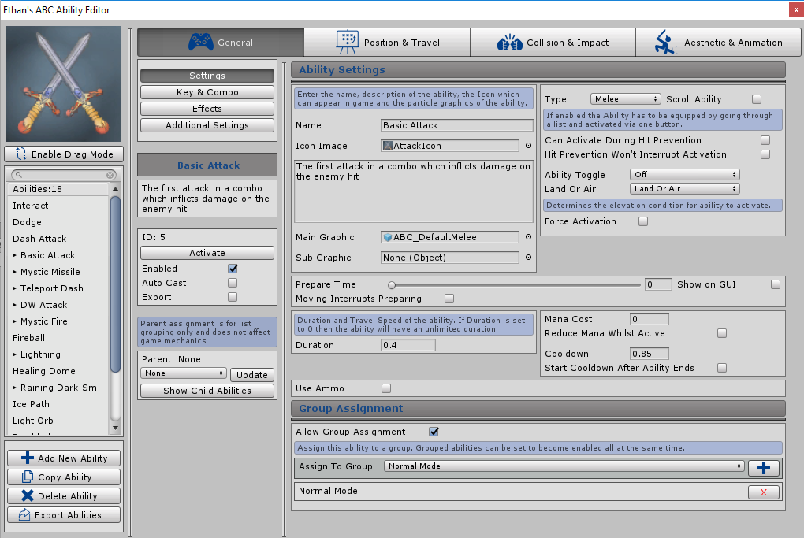

Settings
Overview
Once the ability has been selected then the abilities general settings can be configured including ability type, name, description, graphic, mana cost, cooldown, prepare time and more

Name
The name of the ability is entered here. The name will be displayed in logs during play and through lists and dropdowns in the editor windows.
Icon Image
2D texture representing the ability icon. This icon will be displayed in the top left of the editor when the ability is selected and on GUIs during play, including; UI Icons setup and the current enabled scroll ability GUI Icon
Main Graphic
Main graphic object which represents the ability during play Setting will not show if Ability Type is set too Raycast. Any gameobject can be set which will be instantiated in game when the ability is activated. There is no restriction to what gameobject can be added. For example a model of a missile or a particle effect of a fireball can be set. If no object is set then ABC will revert to the default projectile particle during play.
Sub Graphic
A second object can be added here which will become a child of the Main Graphic described above. Setting will not show if Ability Type is set too Raycast.This object like the main graphic will be instantiated in game when the ability is activated.
Type
The type of ability. Depending on the option selected different settings will appear across the ability manager. Either Particle Effect, Melee or Raycast can be selected which represent the following:
-
Particle Effect
-
When activated will create a gameobject in game which can
travel and collide with objects applying effects. Will become
its own entity by not becoming a child of any other object allowing
it to move on it’s own accord.
-
RayCast
-
When activated will raycast out via to different target points
depending on the travel type selected. Any objects hit will have
effects applied. No gameobject is created. Recommend for FPS type games
-
Melee
-
When activated will create a gameobject which will become a child of the starting position object,
allowing for animations to control the movement of the ability (like a sword swipe).
This type of ability has different settings and functionality typically used for melee combat.
Will collide with objects applying effects.
-
If selected then the abilities Travel Type will default to “No Travel”
Scroll Ability
If ticked then the ability will be flagged as a Scroll Ability. Only one scrollable ability can be enabled at once during play and all scroll abilities will trigger with the same key/button. For example during play the entity will ‘equip’/enable one of the scroll abilities which can be activated with a key/button. The entity can then switch to another scroll ability which is next in the list ‘equipping/enabling it’ and disabling the scroll ability it switched from. The newly equipped/enabled scroll ability can then be activated using the same key/button as before.
This can be used in a game where you want to cycle weapons like an FPS. All scrollable abilities will activate via one trigger. Configuration to setup what key will activate the current equipped scroll ability and cycle to the next and previous scroll ability can be done in the ABC Controller settings. More information on setting up ability scroll triggers can be found by clicking the following link: Scrollable & Reload Triggers
Setup can also be done to enable a group of abilities once a specific scroll ability becomes enabled/’equipped’. This can be used to setup a weapon system where equipping a hammer will enable certain melee abilities, whilst then switching to a sword will enable other melee abilities etc. More information on setting up ability groups can be found by clicking the following link: Ability Groups
Different settings throughout the ability manager will appear if the ability is set as a Scroll Ability.
Can Activate During Hit Prevention
Ticking this box will allow the ability to start activating even if the entities ability activation has been prevented due to a recent hit. The Setting to enable/disable if the entities ability activation can be restricted from a hit can be found in the ABC Controller Settings, for more information click the following link: Hit Can Prevent Activation Setting
Hit Prevention Wont Interrupt Activation
Ticking this box will ensure that the abilities activation will never be interrupted due to a recent hit. Setting to enable/disable if the entities abilities activation can be interrupted from a hit can be found in the ABC Controller Settings, for more information click the following link: Hit Can Interrupt Activation Setting
Ability Toggle
Determines if the ability can be toggled on/off. If the ability toggle is on then the ability will activate and stay in play until the duration is up or it has been toggled off. By default this is turned off so the ability will stay in play until its duration is up and will never end early due to being toggled off.
An example for this is if you want to hold down a key to activate a shield ability which will disappear when the player lets go of the key. 3 Options can be selected from the drop down: Off, Hold and On Off
-
Off
-
Ability toggle is disabled allowing the ability to act as normal. Nothing will be able to toggle it off
-
Hold
-
Ability will remain in play for as long as it’s key/button trigger is held down
unless it ends through other functionality like destroying on collision or having a duration.
Whilst the ability is active if the key/button is released the ability will end.
-
On Off
-
Pressing the abilities key/button trigger once will activate the ability.
Ability will remain in play until the same key/button trigger is pressed again.
Ability can also end early through other functionality like destroying on collision or having a duration.
If the Ability Toggle is set to “Hold” or “On Off”. the following setting will appear:
-
Can Activate Abilities When Toggled
-
If enabled then the entity can activate other abilities whilst this ability
is toggled on. If false then the entity can not activate other abilities whilst
this ability active during play.
If Can Activate Abilities When Toggled setting is disabled the following setting will appear:
-
Repeat Initiating Animation Whilst Toggled
-
If enabled then the Initiating Animation will be repeated whilst the
ability is toggled on during play. The animation will stop repeating
once the ability is toggled off
Land Or Air
A dropdown which determines the type of elevation required by the entity to activate the ability, i.e only activate ability if the entity is on the ground and not in the air. The following dropdown options can be selected:
-
Land Or Air
-
Set as default, if this option is selected then the ability
will not take elevation into account. Entity can be in the
air or on the ground it won’t matter as ability will ignore
the elevation status and always activate.
-
Land
-
Ability can only activate if the entity is on the ground and not currently
in the air. System will consider the entity on ‘Land’ if the entity is less
than 1 distance from the ground.
-
Air
-
Ability can only activate if the entity is in the air (not on the ground).
If selected a second field will appear “Distance From Ground” which will
determine how far the entity needs to be from the ground to be considered as in the
air. e.g if 4 is set then the entity will be in the air if the distance between
the below object and the entity is greater than 4.
Force Activation
If enabled then the ability will activate even if the entity is currently restricted from activating abilities. This will override:
- Ability activation intervals (the interval between abilities being allowed to activate)
- Idle mode restrictions
- Restrictions due to other abilities currently being activated (note: Will allow the forced ability to activate even if another was also being activated. If both abilities have animations setup then these would need to be accurately timed not to conflict with each other.)
- Toggled abilities activated in play (toggled abilities can be setup so once they are in play no other abilities can be activated)
- Ability activation restricted due to an ability reloading
Hits which have restricted the entity from activating abilities are not taken into consideration due to another setting “Can Activate During Hit Prevention” which determines if the ability can activate when the entity is ‘hit restricted’.
If ticked enabled the following setting will appear:
-
Interrupt Current Activation
-
If enabled then any abilities currently being activated will be
interrupted when the force ability is activated.
-
An example for this is having a ‘Dodge’ ability which will
interrupt a melee ability currently activating, which will stop
the entity from attacking to dodge away.
Prepare Time
Determines how long the ability will wait before initiating, simulates the entity 'casting/activating/preparing'. If 0 is set then the ability will skip the preparation stage. If the ability is set to prepare then additional settings will become available throughout like animations which can play out whilst the ability is preparing (i.e simulate the entity casting/activating/using the ability).
Show on GUI
If the Preparing Slider or Preparing Text has been setup in the ABC Controller Settings then ticking this setting will show the current preparation progress of the ability on the slider/text configured. Once the slider reaches the end the ability will initiate.
If left unticked then the slider or text GUI setup will not be used whilst the ability is preparing.
Ignore Prepare Time Adjustments
If ticked then the prepare time can not be modified during play for example by effects which increase/decrease prepare time. The prepare time will always be what was set.
Moving Interrupts Preparing
If true then moving the entity from its original activation position can interrupt the preparation, stopping the ability from activating. The system will record the position that the entity started preparing the ability. If the entity moves a defined distance away from the starting position then the abilities activation will be interrupted.
If enabled the following setting will appear:
-
Distance to Interrupt
-
Defines how far away the entity needs to move from the starting
position to interrupt the preparation, stopping the ability from activating.
Duration
Determines how long the ability will remain in play before it is automatically disabled. Ability can be disabled before the duration is up through other functionality like being setup to destroy due to object collision. If 0 is set then the ability will have an unlimited duration.
Travel Speed
Determines how fast the ability will travel. Setting will only show if the Ability Type is set to “Particle Effect”
Raycast Length
When the Ability Type is set to "Raycast" then on activation a raycast will be sent out, inflicting effects on all those hit. This setting determines the length the Raycast will go.
Affect Layer
When the Ability Type is set to "Raycast" then on activation a raycast will be sent out, inflicting effects on all those hit. This setting determines what Unity Layer the raycast will be on (only objects on the same layer as the raycast will hit).
Raycast Radius
When the Ability Type is set to "Raycast" then on activation a raycast will be sent out, inflicting effects on all those hit. This setting determines how wide the raycast radius is. The higher the radius the bigger the height and width of the cast hitting more entities.
A wider width would be appropriate to use for a shotgun ability as this general hits in a cone shape and not just a straight line.
Raycast Hit Max
When the Ability Type is set to "Raycast" then on activation a raycast will be sent out, inflicting effects on all those hit. This setting determines how many objects will be ‘hit’ before the ability stops. I.e if 2 is set then the ability will inflict effects on the first 2 entities hit by the raycast and then stop. If 0 is set then there is no limit to how many can be hit.
Raycast Blockable
When the Ability Type is set to "Raycast" then on activation a raycast will be sent out, inflicting effects on all those hit. If this setting is enabled then the raycast can be blocked by non ABC StateManager objects, stopping the cast in its path and stopping anything behind the blocked object from being hit. If disabled the raycast will travel out ignoring all objects that do not have the ABC StateManager component.
Raycast Ignore Terrain
When the Ability Type is set to "Raycast" then on activation a raycast will be sent out, inflicting effects on all those hit. If this setting is enabled then the raycast will ignore the active terrain disregarding it as an object hit by the raycast.
Mana Cost
Determines how much mana is required to activate the ability. If the entity does not have enough mana then the ability will not activate.
Reduce Mana Whilst Active
If enabled then whilst the ability is active in play the entities mana will be reduced by the cost every second. If the entities mana reaches 0 the ability will be destroyed. By ticking this box and setting the ability to be toggled on/off with an infinite duration you can make abilities which will drain mana whilst toggled on, like a shield.
Cooldown
Determines how long the entity will have to wait after the ability activates to activate it again. This links into the Cooldown UI Icon settings which can be setup to represent on an icon bar when the ability is ready to activate again after it was activated. More information on setting up cooldown icon GUIs can be found by clicking the following link: UI Icons cooldown setup
Start Cooldown After Ability Ends
If enabled then the cooldown described above will not start until the ability which was just activated is destroyed. I.e if a fireball is activated then the recast won’t start until the fireball is destroyed.
Use Ammo
If enabled then the ability will require ammo to activate. Each time the ability activates it will reduce 1 from the abilities ammo count. If the ammo count is 0 then the ability will not activate. Although named as ammo this can also be used to control how many times an ability can be used in game. Once ticked the following settings appear:
-
Ammo Count
-
The current ammo count for the ability i.e how much ammo the entity has for the ability.
-
Ammo count can be adjusted via ability effects. More information on setting up ability effects be found by clicking the following link:
Ability Effects Overview
-
Use Equipped Weapon Ammo
-
If ticked then the ability will consume ammo from the current equipped weapon. You can control which abilities are enabled/disabled when a weapon
is equipped in the following settings described here:
Enable Abilities When Weapon Equipped This allows you to define which ability takes from what weapon ammo. If ticked then ammo
for the ability can no longer be used.
-
Ammo count can be adjusted via ability effects. More information on setting up ability effects be found by clicking the following link:
Ability Effects Overview
-
Reduce Ammo Whilst Active
-
If ticked then the ammo count will be reduced by one for each second the ability is active during play
-
Setting will not appear if Ability Type “Ray Cast” has been selected
Use Reload
Only useable If ability has been set up as a “Scroll Ability”. More information on scroll abilities can be found by clicking the following link: Scroll Abilities Overview. If enabled then the abilities ammo will be divided into ‘clip sizes’ which determines how many times the ability can activate before a reload is required. Everytime the clip count reaches 0 the ability will require a trigger to be pressed to ‘reload’ filling up the clip. When the clip count reaches 0 The ability can’t be activated again until the reload has filled the the clip (if possible, if ability only has 6 ammo remaining and clip size is 10 it will only fill clip up to 6).
The clip can also be reloaded early discarding the current clip count but filling the clip to full ready for an upcoming battle. Although named after gun mechanics this in theory isn’t a setting just for guns. You may create an energy ability which has 100 shots and after 10 ‘shots’ (clip size being 10) the entity will need to recharge his energy with a click of a button.
Reloading will be cancelled If the scroll ability is disabled/unequipped due to the entity swapping to another scroll ability. Once the scroll ability is re-equipped/re-enabled then it can once again be reloaded.
Example of use: Ability has an ammo count of 100 and a clip size of 10. After 10 shots, the ability will require a trigger to be pressed to reload, filling the clip back up to 10 and reducing the ammo count by 10.
Reload Animations and Graphics can be setup to initiate when reloading is done. The reload trigger is configured in the ABC Controller settings. More information on setting up the reload trigger can be found by clicking the following link: Reload Input Type
When ticked the following settings will appear:
-
Clip Size
-
The size of the ‘Clip’ explained in more detail above.
Determines how many times the ability can activate before a reload is required.
-
Reload Duration
-
How long it takes to reload the ability, after the duration the ammo/clip values will change.
-
Auto Reload When Required
-
Will automatically trigger a reload on the ability when the clip reaches 0
-
Reload Fill Clip
-
If enabled then the clip count will increase one by one with the interval
being the reload duration. If disabled then normal functionality will occur
of the whole clip filling to the max possible after the reload duration defined.
-
Can be interrupted with the activating of the ability,
i.e can reload one by one and stop halfway to the clip being full to activate.
-
Useful for abilities where the entity will be filling ammo one by one like shotgun shells.
-
Fill Clip Repeat Graphic
-
Will appear if “Reload Fill Clip” is ticked
-
If enabled then any reloading graphics setup will repeat each time the clip is being refilled (one by one).
-
Reload Restrict Ability activation Duration
-
Defines how long the entities ability activation will be restricted for once the reload has started.
Allow Group Assignment
If enabled then the ability can be assigned to an Ability Group which has been setup. Grouped ability can be set to become active all at the same time after different events. More details on Ability Groups and how to set them up can be found by clicking the following link: Ability Group Information
If ticked then further config will appear to assign the ability to a group. The ability can be added to a group by selecting a group in the dropdown next to the “Assign To Group” label and then pressing the “+” button. The ability can be removed from a group by hitting the “X” button at the end of the row of the group you no longer want the ability to be assigned too.